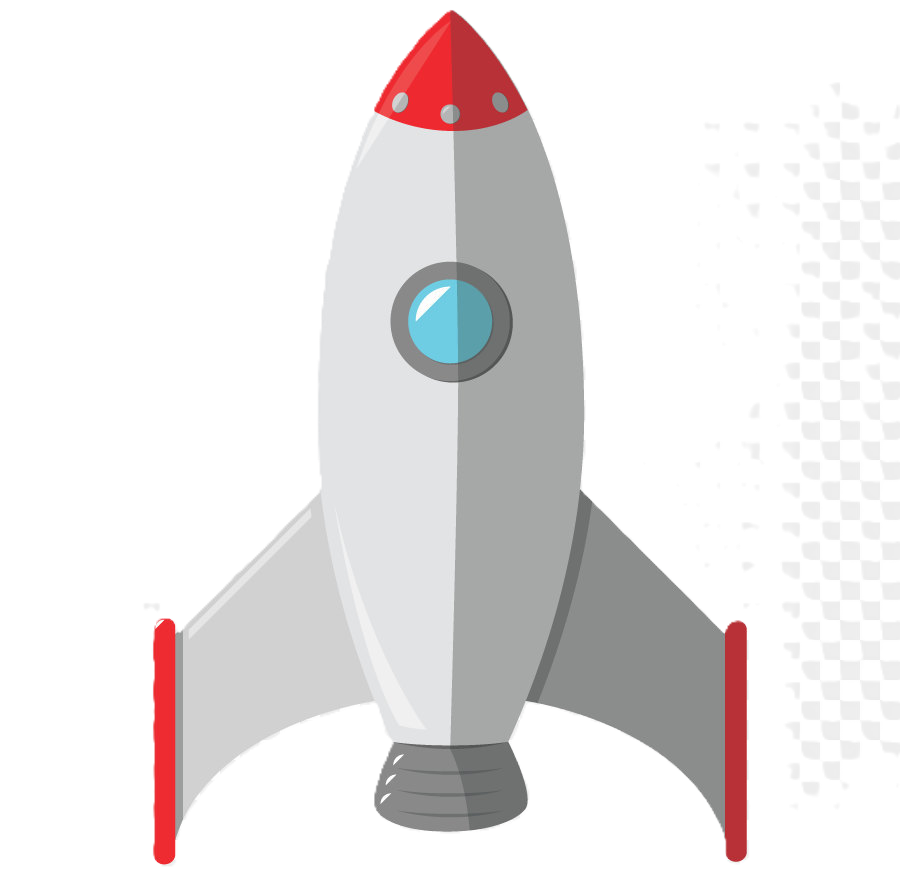
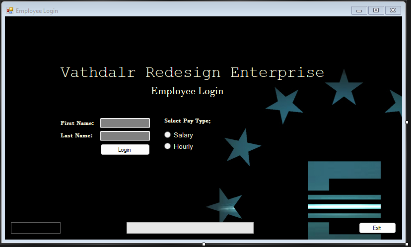
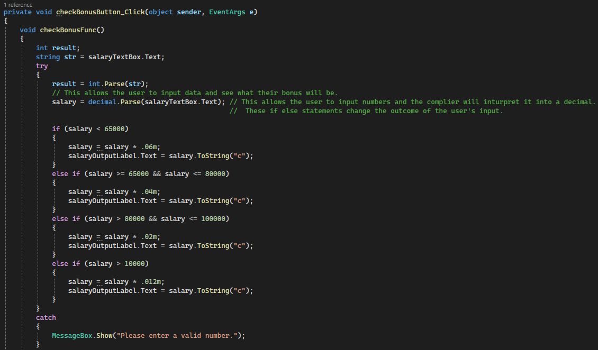
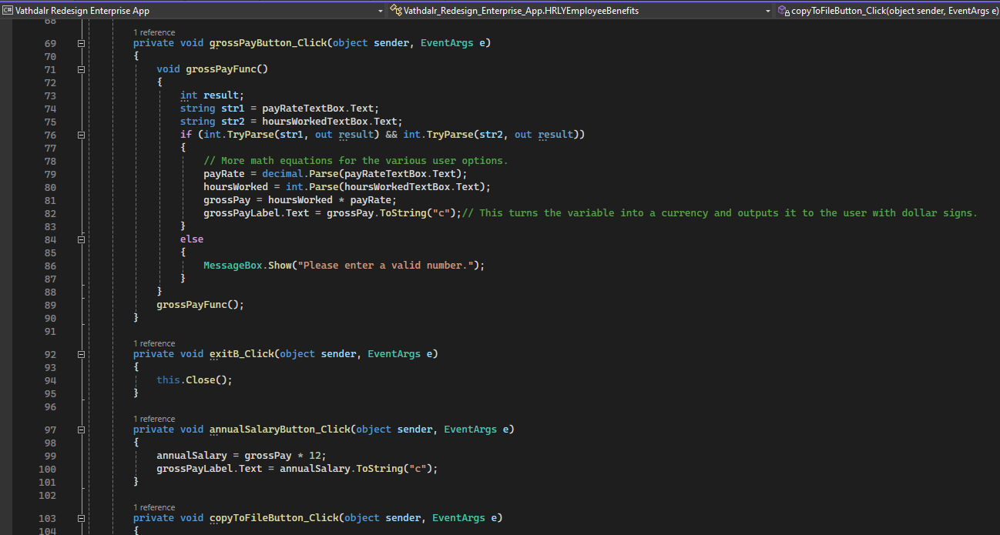

Objective Six
Describe, develop, analyze and integrate data structures, databases, and database management systems.
UAT Space Program
 Click to see it in action.The UAT Space Program effectively aligns with objective 6, showcasing a sound utilization of appropriate tools, techniques, and methodologies in software development. The HTML structure adheres to standards with a well-defined document type declaration, ensuring compatibility and proper rendering across various browsers. The inclusion of external JavaScript files, such as SpaceProgramMKIII.js, dataLoader-1.js, and code.js, promotes code modularity and maintainability, enhancing the scalability of the software solution. The integration of CSS in SpaceProgramMKII.css ensures a visually appealing and organized layout. The implementation of a navigation bar enhances user experience by allowing seamless transitions between different sections of the application. Interactive buttons and dynamic content updates, managed by JavaScript functions like updateDisplay(), reflect an understanding of user-centric design and responsiveness. Furthermore, the tabular presentation of sensor data underscores effective data visualization practices. Overall, the UAT Space Program code aptly employs a cohesive blend of technologies, emphasizing best practices in software development and meeting the objectives of using appropriate tools and methodologies.
Vathdalr Redesign Enterprises
This porject created an employee login screen that allowed employees to log into a portal. The code utilizes basic data structures such as variables (salary, bonus, weeksWorked, timeOffWork), strings, and arrays. It demonstrates the manipulation and use of these data structures to perform calculations and store user inputs. The application integrates user data through various controls (text boxes, buttons) and processes it using functions (checkBonusFunc, vacationTimeFunc, vacationGamble, coinTossButton_Click). The data is then displayed on the UI and written to a text file (readFile.txt). Although it doesn't use a full-fledged database management system, the application showcases a basic form of data persistence using file input/output (StreamWriter). It allows the user's data to be stored and retrieved from a text file. The code includes functions (checkBonusFunc, vacationTimeFunc, vacationGamble, coinTossButton_Click) that perform specific tasks, demonstrating the organization of logic into reusable components. It also uses basic algorithms for calculations based on conditions. The Random class is employed for generating random numbers in the coinTossButton_Click method, simulating a coin toss. This demonstrates a basic use of random number generation. The code includes event handlers (checkBonusButton_Click, calculateVacationTimeButton_Click, copyToFileButton1_Click, exitB_Click, button1_Click, coinTossButton_Click) that respond to user interactions, showcasing event-driven programming.
Figure 1.1 - The first log in screen for the project.
Figure 1.2 - Showcasing error catching.
Figure 1.3 - Showcasing the various functions mentioned above.